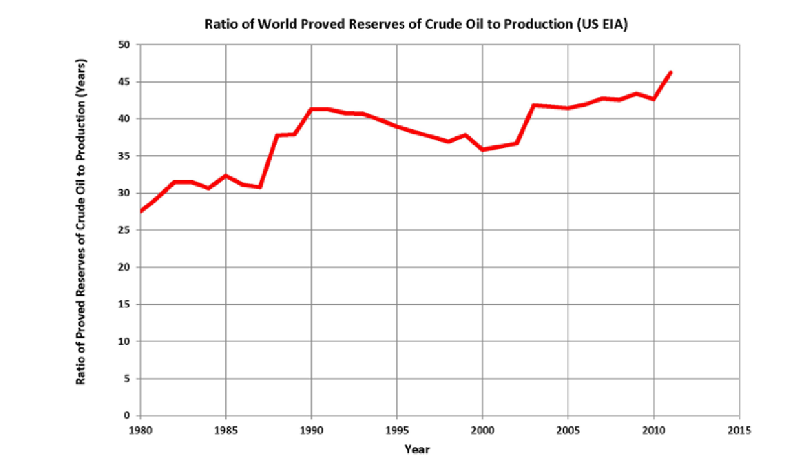
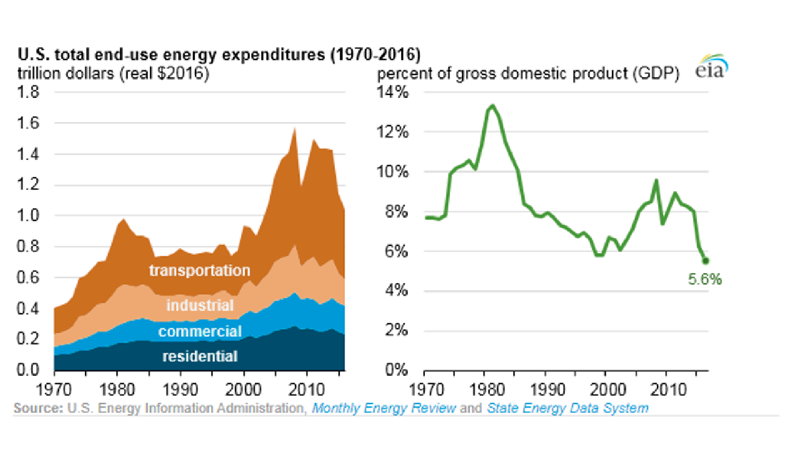

Crecimiento Económico | Energía, población y crecimiento
Datos sobre el uso de energía
El acervo Xt puede ser las “reservas totales probadas” de petróleo y
gas natural.
El término Et es el flujo de estos recursos, o “energía”, que entra
en producción.
Datos sobre el uso de energía
Datos sobre el uso de energía
En términos per cápita, las cosas se ven diferente.
En particular, para países más ricos como Estados Unidos, Reino
Unido o Japón, el uso de energía per cápita comenzó a caer en las
últimas décadas.
Datos sobre el uso de energía
Datos sobre el uso de energía
Si miramos a todos los países, la relación entre el uso de energía
per cápita y el PIB per cápita es positiva.
Datos sobre el uso de energía
Datos sobre el uso de energía
La relación entre reservas y producción aumentó, lo que indica que
los descubrimientos de reservas de combustibles fósiles aumentaban más
rápido que el uso de energía.

Datos sobre el uso de energía
Los costos reales aumentaron con el tiempo, pero en los últimos
años disminuyeron.
Las nuevas series distinguen la intensidad energética física y el
gasto energético como proporción del PIB. La primera usa energía/PIB
real; la segunda, gasto nominal/PIB nominal, por lo que no deben
confundirse sus unidades.

Datos sobre el uso de energía
La caída de \(\beta\) también
podría deberse a una caída en el precio de la energía o a una caída en
la relación E / Y, algo que a veces se denomina “intensidad
energética”.